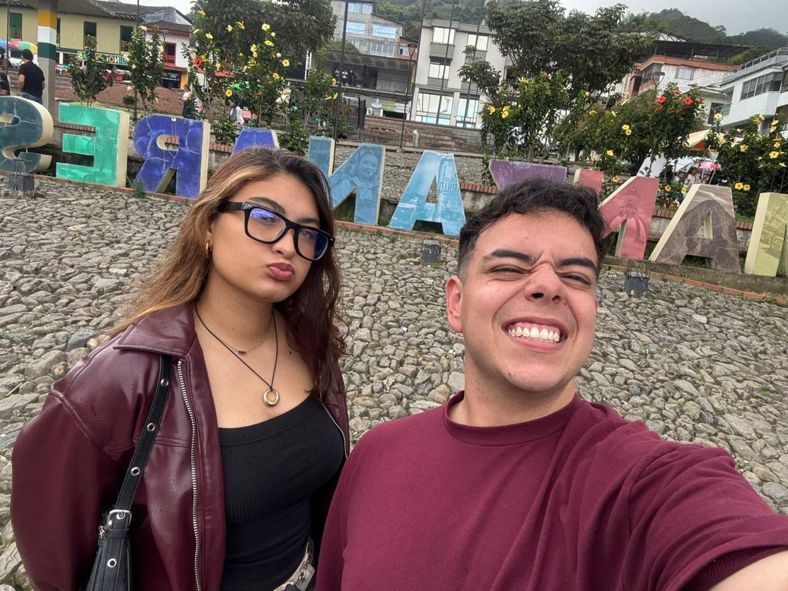
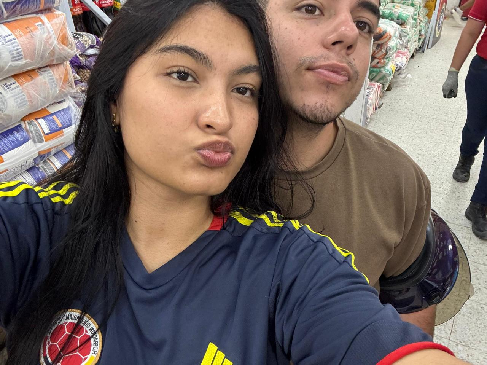
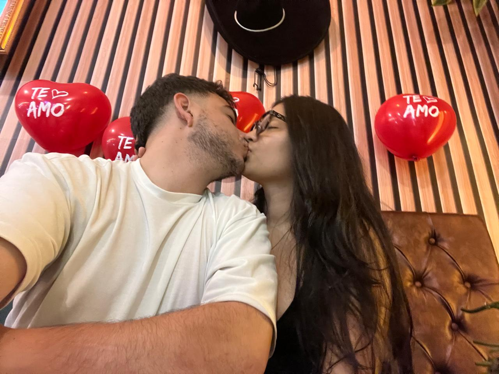
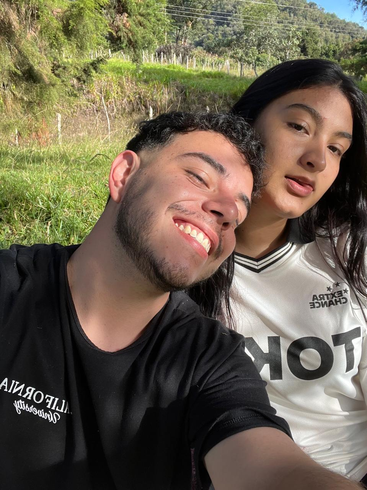
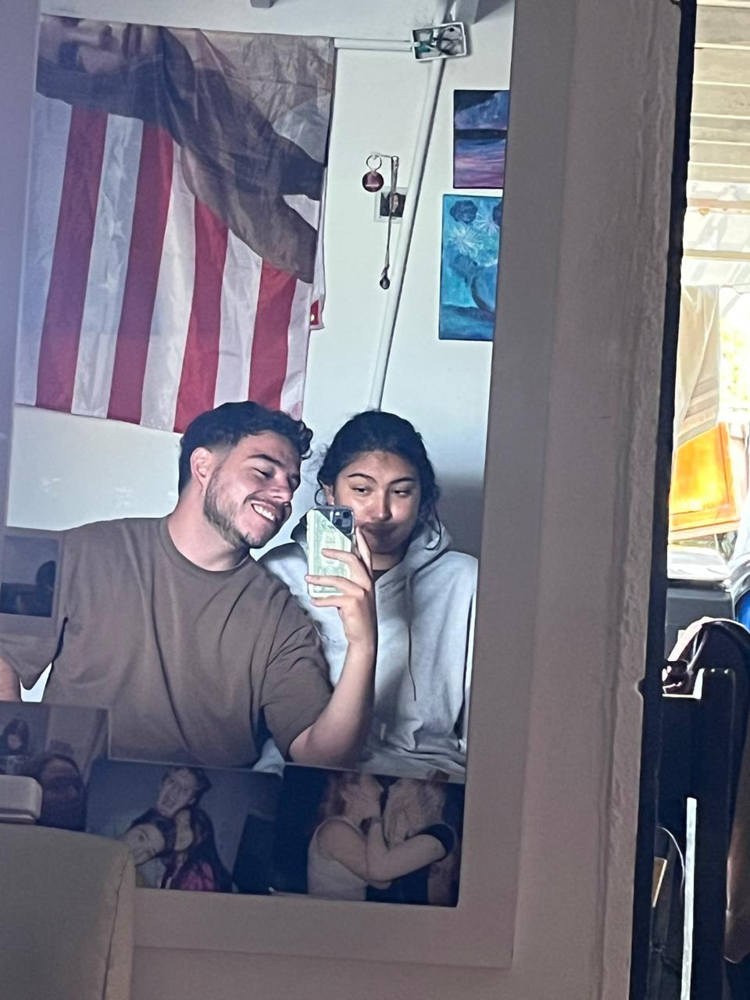
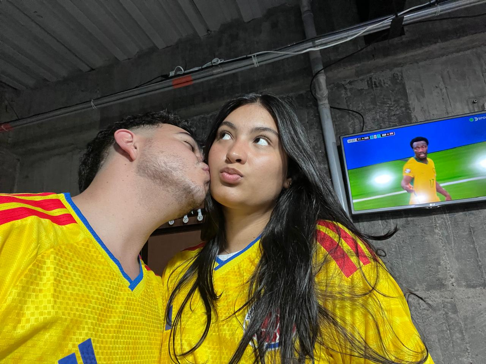

Eres mi más bonita casualidad, amor.
De todas las cosas inesperadas que pueden pasar en la vida, encontrarte a ti es, sin duda, una de mis favoritas.
Seis pedacitos de nosotros






Mi Gitza,
A veces siento que las palabras se quedan cortas para explicar lo mucho que significas para mí. Pero aun así quería intentarlo.
Me gusta pensar en nosotros y en todas esas pequeñas cosas que, sin hacer demasiado ruido, terminaron convirtiéndose en recuerdos que quiero conservar. Tu forma de ser, tus ocurrencias, nuestras conversaciones y hasta esos momentos simples que probablemente olvidaríamos si no los viviéramos juntos.
Gracias por ser tú, por llegar a mi vida y por hacer que muchos días tengan algo bonito que esperar. No necesito que todo sea perfecto; me basta con que sigamos teniendo razones para reír, hablar, abrazarnos y elegirnos.
Y si alguna vez te preguntas qué eres para mí, recuerda esto: eres mi más bonita casualidad, amor.
Con amor,
tu Gitzo ❤️
Un poquito de nosotros, en tiempo
Y cada segundo cuenta cuando es contigo.